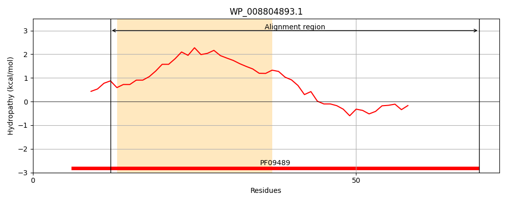
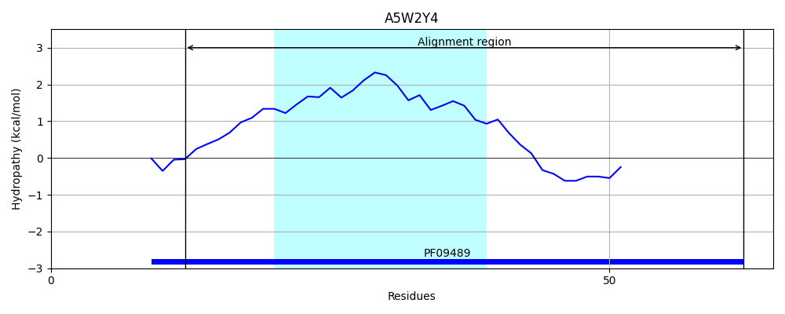
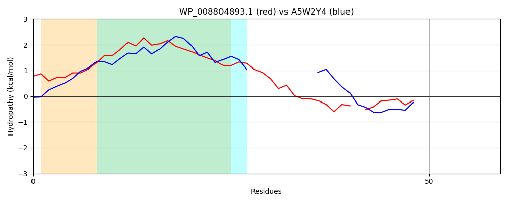

Hit Accession: A5W2Y4
Hit TCID: 9.B.69.1.1
Hit Description: gnl|BL_ORD_ID|549 gnl|TC-DB|A5W2Y4|9.B.69.1.1 Cobalt transporter, subunit CbtB OS=Pseudomonas putida (strain F1 / ATCC 700007) GN=Pput_2355 PE=4 SV=1
Mach Len: 59
e:0.000013
Query TMS Count : 1
Hit TMS Count: 1
TMS-Overlap Score: 0.900000
Predicted Substrates:CHEBI:23337;cobalt(2+)
BLAST Alignment:
| Protein Hydropathy Plots: | |
|---|---|
|  |  |
Pairwise Alignment-Hydropathy Plot: | |
|  | |